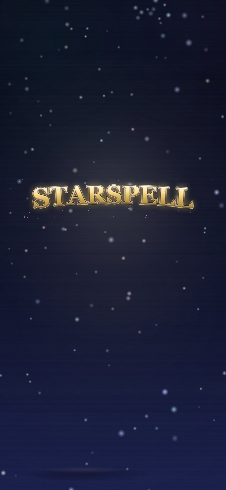
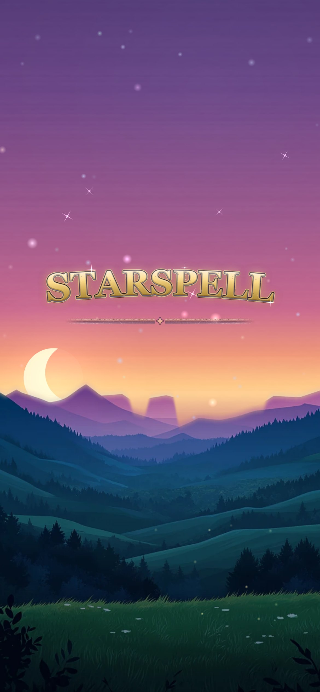
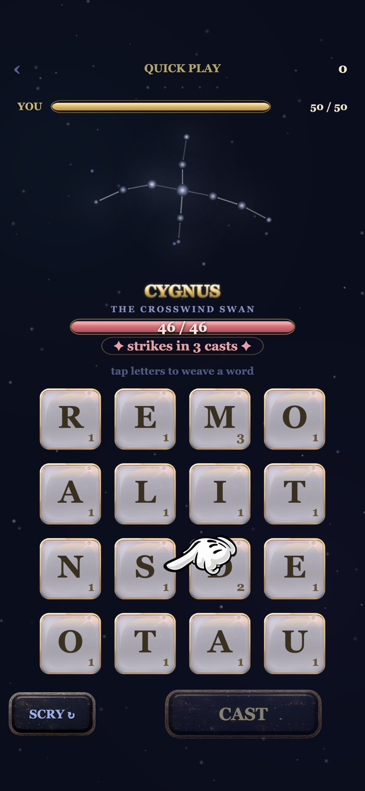

STARSPELL · DESIGN REVIEW · 2026-10-02 · THE FIRST-OPEN LINE
THE FIRST NIGHT
Six ways to make the first five minutes of a stranger's life in STARSPELL the reason they come
back tomorrow. Every concept drops the player straight into a game, scripts the opening, hides the seam
where the script lets go, and teaches the rules by doing — then each one was attacked by two critics: a cold-player
advocate and a feasibility judge who verified every claim against the shipping code (v0.111.1, HEAD 8896ac8b).
This page is the next rev of the first-open line — v0.75.0 THE FIRST OPEN, your 9/2 wordless ride, stays the skeleton everywhere it deserves to.
Skylar's ask, verbatim (10/2):"We need to design a tutorial for the game that will also be
the first thing a new player sees when they launch the game for the first time. A very important part of this tutorial,
or the start of the game for a new player, is that it really needs to hook people in the first 5 minutes of the game.
That's what's going to get them to come back and keep playing the game. I need you to build a design page on a Sky Pilot
GitHub page and give me ideas on how we can make the first 5 minutes of a new player's experience of the game amazing.
We want to hook them into the game so that they'll continue playing while also explaining the rules of the game. This
first game they play should put them right into a game, and it should be scripted so that we can guide them where we
want. At some point, maybe unscripted, but we need some cool animations and whatnot. I want you to put this in the
design page with multiple different ideas so I can look at it and really see what would be a great hook in those 5
minutes. We can build it into the game after I check out the design page."
How to rule: read section I (what five minutes buy today), walk the six concepts, then tap a chip on each
numbered question at the bottom and COPY VERDICTS back to the console. Nothing here is built.
I · What five minutes buy today
The shipped first open is already good — and already yours: a wordless bare meadow, the wordmark
condensing from stardust, an auto-rise nobody is asked to tap, a curated board where a painted hand walks
S·T·A·R against a star-beast. These are real captures from this morning (headless Chrome at DPR 3, fresh
profile, Firebase blocked, live v0.111.1 bytes):
0:00 · the dark zenith

the condense

the wordless meadow

the hand at S
Five code-verified facts that frame everything below:
The whole opening is silent. WebAudio cannot start before a user gesture, and the first open never asks
for one — the intro, the riser and the arrival chime (the prettiest sound in the game) have been inaudible for every
new player in the game's history. The first sound a stranger ever hears is their first tile tap.
Fight 1 is a dice roll. The board is curated; the beast is not — a uniform draw across 13 beasts spanning
VULPES (30 hp, atk 8) to URSA (76 hp, atk 14). The difficulty of minutes 2–4 is a 2.5× coin flip.
Every concept below pins it; all six designers arrived there independently.
The hand teaches two of the seven minute-one rules (weave, cast) and retires forever at the first cast.
The fuse, HP, dew, refills, SCRY — all learned by being surprised.
At 5:00 the typical player is 20–40% through the run — standing at the first sigil pick or a minute into
fight 2. The full first run takes 8–15 minutes, ends at DRACO (a real wall for a one-sigil newcomer), and only at its
end does the player meet the meadow chrome, the daily chip, the first question of any kind. Every tomorrow-driver the
game owns currently lives past minute eight.
The first game evaporates. Quick runs never checkpoint; a pocketed phone mid-run replays the whole first
open onto nothing. The players most likely to churn — interrupted commuters — are structurally guaranteed to lose
their progress.
II · The Sky Strikes First
no menu, no meadow, no name — a beast draws first blood, and the title card is the trophy for your first kill
player 7feasibility 7size M claimed → L verifiednew strings 0
The game refuses to introduce itself. Frame one is the battle zenith at speed — star streaks
decelerating to stillness — and VULPES assembles already charged. It pounces before the board exists: a crimson
−8 breathes at the point of contact and flies to a health bar that fades in just in time to catch it. The board rains
in as the answer. The hand walks STAR; the first strike you saw coming lands at 1:10 — ambush, then prediction,
the fuse taught as a two-beat story. And when the fox dies, its scattered stars curve back and condense into the
gold STARSPELL wordmark — the game says its own name only because you made it. The meadow is withheld for the whole
session: at run's end the descent reveals THE FIRST EARTH — a world you never knew had a floor, crickets heard for the
first time, the daily chip already counting.
the pounce before the board
0:00SCRIPTarrive mid-fall: star streaks decelerate over the battle zenith — no logo, no ground, no sound
0:01SCRIPTVULPES assembles already charged — fuse at "strikes in 1 cast", eyes pulsing
0:04SCRIPTTHE OPENING POUNCE — a scripted −8 before any board exists; the YOU bar fades in to catch it
0:07SCRIPTthe answer rains in: the curated STAR deal; fuse re-arms to 4; the hand points at S
0:12GUIDEfirst tap = the game's first sound ever; the hand walks STAR; CAST 5
0:40GUIDEfirst cast — hand retires; pop, bar-slam, drain, score arc
1:10GUIDETHE FORESEEN STRIKE — the fuse you watched count 4→1 lands; this time you predicted it; dew blooms
1:45SCRIPTTHE TITLE IS THE TROPHY — the dead fox's stars curve back and condense into the STARSPELL wordmark
2:10FREEthe sigil pick — the first wholly real decision IS the hidden seam
5:00FREEmid-fight 2, title earned, fifth pip glinting — mid-sentence by design
The player critic — 7/10
Strongest: the trophy title — a genuinely Snap-grade identity move … the single moment where a cold player feels
the game is confident enough to make THEM pay for its name — and the two-strike fuse lesson. Weakest: every
day-two asset (meadow, crickets, daily chip) is banked at minute 9–14 behind finishing the run; the player who
leaves at minute 5 exits having seen zero return hooks. Churn: hurt-before-agency on a decompress-seeking
audience; the silent pounce reads broken on muted phones; the first kill costs ~six words from a cold speller.
The feasibility critic — 7/10 · true size L
Two beats sold as reuse are the two needing carpentry: the title condense is scene-coupled
to the meadow (an extraction-and-port, not verbatim), and THE FIRST EARTH cites two mutually exclusive shipped paths
— the glide and the full-chrome restart — the described moment exists on neither. Battle's sky also has no
velocity driver — the deceleration is new code. Everything else lands line-exact.
The grafts that fix it
Cheapen the first kill — VULPES at 18–20 hp so the slowest speller fells it by ~2:00.
Deliver THE FIRST EARTH on loss too — every first session, won or lost, ends on the meadow + the counting chip. The critic called this the single highest-leverage graft in the deck.
No dead taps ever — any tap advances the beat and sparks at the fingertip; it also arms audio so strike #2 is guaranteed to sound.
III · The Herald's Promise
COLUMBA climbs beside you, keeps your first star · and tomorrow's sky gives it back
player 6.5feasibility 8size full Mnew strings 3 ×5 langs
A wordless game gains exactly one relationship. COLUMBA, THE HERALD DOVE — already complete in the
bestiary, fourteen stars, cream tint, bob idle — assembles off your shoulder mid-ascent and spends the first night
as a witness, not a narrator: it startles off its perch and flies to your health bar one beat before the first
strike lands there (the fuse taught by body language), it taps the dew tile with its beak, and when your first beast
scatters it catches one dying star and seats it, glowing, in its own chart. At graduation it sets that star into
the daily chip and the ribbon names tomorrow's sky. Tomorrow the dove is standing there — and your star burns in that
day's battle sky with a hero-star cross. Not a streak guilt-trip; a creature keeping its word.
the caught star — a kill animation becomes a keepsake
0:04SCRIPTTHE SHARED CLIMB — loose stars gather into the dove off your right shoulder; you crest the zenith together
0:07SCRIPTpinned VULPES assembles; the dove swoops to its perch above the pips
0:40GUIDESTAR, cast, hand retires — the dove wing-flicks on the hit
1:40GUIDETHE WARNING — fuse hits 1; the dove startles and flies to hover at YOUR bar, wings spread at the fox
1:50GUIDEthe pounce lands; the dove taps the dew tile twice with its beak
2:50GUIDETHE CAUGHT STAR — the dove dives into the death-scatter, one star seats glowing in its chart; the ribbon whispers its first line
3:10FREEthe sigil pick; the dove perches silent on the veil's edge
3:40FREEthe hidden seam — the dove stops leading and starts mirroring
~9:00SCRIPTgraduation coda — the star set into the daily chip; tomorrow's sky named · +1 day: the promise kept
The player critic — 6.5/10
Strongest: THE WARNING — fuse ribbon → startled dove → YOU bar, then the hit lands exactly where the eye just
went … the only beat where the dove does a JOB instead of being decoration. Weakest: the caught star is staged at
the most crowded instant of the night — gold rain, toast, scatter — the keepsake is the least legible object on
screen at the one moment it must be the only thing that matters. And the whole promise pays at ~9:00:
it preaches the sermon at minute nine to a congregation that closes the app at minute five.
The feasibility critic — 8/10 · full M
The highest retention-per-line-of-code beat in the deck: dove, scatter, chip, seven-skies names, even the headless
day-key seam all ship today. Caught claims: "the chip's ember lights for the first time"
contradicts shipped behavior (it already breathes — let it surge, not ignite); the dove can't fly across the
scene cut (three instantiations, not one); wild-COLUMBA can still be dealt as a foe later (needs a ruling).
The grafts that fix it
Write the kept-star flag at the catch, not at graduation — an app killed mid-run still gets the promise
spoken on next open. Worth more than any animation.
De-crowd the catch — suppress the toast, wait out the gold rain, 400 ms time-dilation while the star seats.
Board-dim + one haptic tick under the warning — the only channel guaranteed to reach a heads-down reader.
Two rulings for you before any card: may three ribbon lines end the wordless first open, and is a wild
COLUMBA charming or excluded?
IV · The Sky Leans In
every word louder than the last · the sky swears it never helped
player 7feasibility 8size M, heavy endnew strings 0
The hook is engineered competence: every word the player casts lands bigger, hotter, louder than the
last — and the sky reacts like it's watching something rare. A rigged refill queue (then a "kind bag" that fades
100→50→0% by fight 4) keeps 5–6 letter words findable while staying statistically invisible; the shipped celebration
ladder pays each new length rung with a one-shot cue — a shooting star on the first 5+, the auroras swelling at 6+,
a gold-rain burst at 7+. The first cast is THE WORD WRITTEN IN STARS: S·T·A·R hangs as four new stars threaded gold
beside the fox, holds one breath, then collapses into the damage number. And VULPES is tuned to 33 hp so the
ember minute always arrives — "strikes in 1 cast" with the beast at a sliver: race it or eat it, the core tension
manufactured on day one at stakes of exactly 8 damage.
the word written in stars — tutorial, fantasy and screenshot in one beat
0:04SCRIPTthe shipped open kept verbatim — condense, rise, pinned VULPES at 33 hp
0:45GUIDESTAR stands; first sound; hand glides to CAST and retires
0:50SCRIPTTHE WORD WRITTEN IN STARS — the cast hangs as four stars, then collapses into the 5 that slams the bar; the rigged refill drops M·O·N·S
1:30GUIDEthe board is secretly dense — MOON free, MOTION/ALMOND live; the first 5+ fires the forge + a cue shooting star
2:10GUIDETHE EMBER MINUTE — strikes-in-1, beast at a sliver, "6 left" vs your staged word
3:40FREEfight 2 from the kind bag + one planted gilded tile — the glow you now know how to chase
5:00FREEmid-fight 2/3; the rig is fading; the player believes they earned SPLENDID! — they did, mostly
The player critic — 7/10
Strongest: the constellation-write — simultaneously the tutorial, the fantasy, and the say-it-out-loud screenshot
— and it lands inside minute one. Weakest: 1:30, "the player finds THEIR word unaided" … rigged density is
invisible to the player it is rigged for — the bottom-half scanner casts TAN forever and the ladder never fires.
The feasibility critic — 8/10 · M heavy end
The rare concept doc that read the code before it dreamed — ~95% of its anchors land exact on HEAD. The ember
minute is ~5 lines closing the shipped flow's most dangerous gap. Light spots: the constellation-write forks the
hottest function in the game (150–250 lines, not 100), the aurora swell needs stored handles, and the authored
density has no per-language validation plan — the single highest-leverage missing piece.
The grafts that fix it
Idle rescue, wordless — 8–10 s of stall → one tile of the planted word shimmers once; at 30 s the ghost hand returns for one gesture.
Skill-floor the ladder — no 5+ by cast 5 → the queue deals MOON nearly assembled; the escalation must fire for the bottom half.
A density validator beside build-words.py — assert ≥3 findable words at lengths 4/5/6 per language after every rigged refill, or the queues rot.
Plant tomorrow inside the window — when LEPUS falls, one wordless cue: the bestiary strip slides past, VULPES lit, 24 dark.
V · The Wordless Road
show the summit once · teach with a finger · never say a word
player 6.5feasibility 8size M (L as written; overlay fix buys it back)new strings 0
Your 9/2 philosophy taken to its limit: zero instruction copy, ever — even the hardcoded "tap letters
to weave a word" line comes OFF for the first fight. The game opens at the true zenith with DRACO looming at
15% alpha, only two ember eyes lit, while the wordmark condenses in front of it — then one unbroken 2.8 s fall
down the whole world column, so the player has seen exactly how high this world goes before they're handed the ground.
On the bare meadow, one firefly asks: it breathes the hand's own gold push-ring, and the player's tap — anywhere
— launches the ascent and arms the audio in the same gesture, so the riser and the arrival chime are heard on a
true first open for the first time in the game's history. The hand gets exactly one encore (the dew tile). At first
blood, a 2 s tilt-up: the eyes at the top of the column glint once. The opening shot, paid off inside three minutes.
the summit, first — the eyes are up there, waiting
0:03SCRIPTTHE ZENITH OPEN — true top of the column; DRACO's dim loom; the condense in front of it
0:07SCRIPTTHE WHOLE ROAD DOWN — one 2.8 s fall through every band; ~200 stars thinning to ~12
0:10GUIDEONE FIREFLY ASKS — the ring-lure; any tap launches + wakes sound; 6 s fallback auto-rises
0:13SCRIPTTHE ASCENT, HEARD — riser, star-streak, hush, arrival chime, audible at last
0:17SCRIPTpinned VULPES; the STAR board; header and hint line stripped — only the fox's name speaks
0:45FREEfirst cast; the hand retires; real bag — free play began and nothing announced it
1:50GUIDETHE ENCORE — the hand returns once, for the dew, then retires forever, floating higher
2:40FREEfirst blood → THE TILT-UP: the eyes glint at the top of the column; first pip gilds
5:00FREEmid-fight 2; summit seen twice; not one word of instruction ever shown
The player critic — 6.5/10
Strongest: the first cast and its invisible seam — Marvel Snap's whole FTUE philosophy executed better than the
summit cinematics the concept actually brags about — and the dew encore, the best piece of pure teaching
craft. Weakest: the summit payload is subliminal — the loop is open on the design page, not in the player's
head. A 15%-alpha dragon nobody encodes can't pay off at 2:40. Fix is one slow blink timed to the
wordmark's landing flare, repeated at the tilt-up.
The feasibility critic — 8/10 · L as written, M with the overlay fix
The lure is the smallest new code in the whole concept … it fixes a real, verifiable shipped defect — worth
shipping even if everything else on the page dies.Does not hold: the tilt-up points a
camera Battle doesn't own — its sky is a flat screen-space starfield, no column, no scroll — ship it as a screen-fixed
overlay instead. The fight pin must burn the stock rng rolls (draw-order law), and a Sunday install collides with the
Court of Kings — write the rule: a player's first-ever fight is VULPES on every day of the week.
The grafts that fix it
One blink — make the eyes an encode, not a secret.
Accept input during the cinematic — taps fast-forward to the lure and arm audio; dead taps teach the wrong lesson.
Split the refusal grammar — not-a-word crumbles to dust; too-short bounces home. Still zero words.
Tighten the lure ladder — ring at once, brighter pulse at 2.5 s, auto-rise at 4 s; reduced-motion keeps today's 850 ms.
VI · The Sky You Lit
the night opens dark · what you light, the sky keeps
player 7feasibility 7size M claimed → L (M with the scope cut)new strings 2 ×5
Tutorials are forgotten; marks are not. On a true first open the sky is almost starless — the
star-beasts have been eating it (DRACO is already THE STAR EATER; the fiction is canon). One lone star falls and
gutters out; the wordmark condenses as the brightest object in a dead world. VULPES assembles dim, grey-blue,
only its ember eyes alive — and every word the player lands visibly burns the dark out of it, brightness as a second
HP readout told in light. Then THE FIRST LIGHTING: the fell doesn't scatter the constellation to die — its stars
rise and seat at the zenith, permanently, lines redrawing gold, written to the profile, drawn on the meadow
every boot thereafter. One nameplate in the rite cadence: VULPES · returns to the sky. Tomorrow the game opens
on proof the world remembered you — one constellation lit by your hand, twenty-five still dark.
the first lighting — a kill becomes a permanent mark
0:04SCRIPTTHE LONE STAR FALLS — near-starless sky; one star falls and gutters; the condense is the brightest light in the world
0:07SCRIPTauto-rise through a thin climb band — the thinness IS the story
0:10SCRIPTVULPES assembles DIM — grey-blue, eyes only; the STAR board rains in
0:40GUIDEthe hand walks STAR; first sound at first tap
1:10FREEfirst cast — the fox HEATS a shade per hit; damage has two readouts, one of them pure light
2:00FREEthe schedule-guaranteed strike; dew blooms after
2:40FREETHE FIRST LIGHTING — stars rise and seat at the zenith; written to the profile, forever
3:00FREEthe sigil pick, untouched
5:00FREEmid-fight 2, the sky measurably brighter than they found it; the graduate meadow wears their constellation
The player critic — 7/10
Strongest: the lighting fires on a fell the player genuinely earned — this is the starter-Pokémon beat, and no
comp in the casual word space has it. Weakest: the dark open asks a cold player to mourn a sky they have
never seen — six grey dots on black reads as "still loading." The graft: THE THEFT PROLOGUE — open on the
full jewelry-box sky for one breath, let a beast-shaped shadow swallow one constellation star by star, THEN cut to
dark. Absence only aches when the player saw what was taken.
The feasibility critic — 7/10 · L as specced
The fork point rides shipped choreography — genuinely cheap. But the hook's second half isn't in
the plan: the proposed dark-sky key would black out every veteran's meadow on update day (needs a flag
minted with the first-open decision); the zenith seats aren't authored anywhere (beast charts are local shapes, not
sky positions — 26 anchors are new design work); and the collection engine contradicts itself (ftue-only ceremony vs
25-more-to-light). The showcase also still assembles a lit beast into the "dead" sky — suppression is new, not free.
The grafts that fix it
The theft prologue — 2 seconds that convert the dark dress from designer fiction into felt loss.
Skip-lock the first-ever lighting (~1.5 s; taps accelerate the stagger, never cut it) — the one beat that makes tomorrow must be un-missable exactly once.
The scope cut that saves the M — full ceremony ftue-only; every later first-species fell appends to the lit sky with a 600 ms converge beat; one baked sky-band atlas, rebaked only on change.
Ghost the 25 dark outlines for 1.5 s at graduation + ledger line "constellations lit · 1 of 26" — the ache needs a pictured next.
VII · The First Ascent
every rung a first · the climb never goes cold
player 7feasibility 8size M claimed → L (the graduation-law rework)new strings 2 ×5
Today's first game evaporates — no checkpoint, win-or-die — so walking away costs nothing, and
most walk away mid-fight-2. This concept makes the first session a named five-rung ladder, THE FIRST ASCENT, that
cannot be lost: fight 1's fuse never fires (pure offense first); the one-shot gold thread spells L·I·G·H·T and
the button says the multiplier out loud — 12 where STAR said 5; the first strike is staged safe at full health with the
dew answer in the same breath; at the first fell a tiny star seats on the fight pip and breathes — "the stars hold
your place" — and the run saves itself from then on, with death only rewinding. At the second fell, THE ROAD
REVEALED: the camera lifts into the night chart, opens on DRACO's two open ember eyes at the top, and glides down the
serpentine road — CYGNUS dark, CORVUS dark with a gold sigil medallion seated one fight away — to the player's rung,
two constellations burning gold below. Then the elite herald, at 5:00 exactly. Whenever they stop — back arrow,
pocketed phone, even death — the meadow door reads THE FIRST ASCENT · fight 3 of 5 under that same breathing star.
the road revealed — a half-finished climb, standing there warm
0:00SCRIPTthe shipped open kept verbatim; fixed ladder VULPES→LEPUS→CORVUS→CYGNUS→DRACO; fight 1's fuse tuned to never fire
0:13GUIDEthe hand walks STAR; first sound at first tap
1:00GUIDETHE GOLD THREAD'S ONE LESSON — the authored refill; the thread lights L·I·G·H·T; CAST reads 12 where STAR read 5
1:25FREEthe forge pays a gilded tile; board scripting ends — the third word is the player's own
1:55FREEfirst fell → pip 1 takes a breathing star; ribbon, once: "the stars hold your place"
3:15GUIDETHE FIRST STRIKE, staged safe at full health — and the pinned dew answer in the same breath
4:45SCRIPTTHE ROAD REVEALED — DRACO's eyes, the medallion one fell away, your two gold rungs; the elite herald
5:00FREEthe cliff: fight 3 of 5, engineered to be interrupted — stopping is safe; finishing is tomorrow's reason
The player critic — 7/10
Strongest: THE ROAD REVEALED — the only beat in the genre's usual FTUE playbook that casual word games never do
… the rare FTUE where the return driver has a face. Weakest: the opening kept "verbatim" without being questioned
— 13–17 seconds before the player's finger matters, in the single highest-abandon window of the funnel. And
"the player's own word fells VULPES at 1:55" is designer fiction unless HP is tuned so any third word kills.
The feasibility critic — 8/10 · true size L
Nine-tenths of the cited machinery verifies at the exact line — the chart's entry ride is literally coded as
this shot, the trio exists verbatim, quick already ends at DRACO. The underpriced law:
graduation fires only at run end, so a pocketed phone today replays the whole first open over an orphaned checkpoint
— the one beat the whole concept exists to create becomes the delete moment. Move graduation to the first
checkpoint write; give the abandon door a persist branch; route the CONTINUE door. Also new, not reuse: the road
medallion has never seated on the chart, the ribbon is hardwired to the daily sky, and the herald only fires for
bosses. An L wearing an M's clothes — and still the best hook-per-line-of-code pitch this flow has seen.
The grafts that fix it
Engineer the 1:55 kill — VULPES ≤19 hp so STAR + LIGHT + any legal word fells it, every time.
Tap-to-skip everything scripted — the reduced-motion paths already are the skip implementations; wire them to input.
Cut the ride to ~15 s, tap-advance; temper first-ascent CORVUS (~0.8×) so the first ELITE is drama, not a rewind loop.
The medallion gleams on the morning-after door — "a sigil waits · fight 3 of 5": the Zeigarnik pull plus a concrete tomorrow-reward.
VIII · The Critics' Table
Twelve critiques, two lenses each. Player scores are harsh by instruction (8+ = "I would personally
reinstall tomorrow"); feasibility scores are hook-per-unit-of-work, discounted by risk, with every builds-on claim
checked against HEAD.
concept
player
feas
true size
strings
its one idea
its one danger
THE SKY STRIKES FIRST
7
7
L
0
the title card as the trophy for your first kill
every day-two asset lives at minute 9–14
THE HERALD'S PROMISE
6.5
8
full M
3
a creature that keeps its word across a day boundary
the promise is spoken at an instant the player isn't looking
THE SKY LEANS IN
7
8
M (heavy)
0
engineered genius — the rig that never shows
the bottom-half scanner never fires the ladder
THE WORDLESS ROAD
6.5
8
M*
0
the summit shown first; the ascent finally heard
the payload is subliminal without one blink
THE SKY YOU LIT
7
7
L
2
a permanent mark — the world remembers you
the collection's second half isn't in the plan
THE FIRST ASCENT
7
8
L
2
a first game that cannot be lost, interrupted on purpose
the graduation law under it is the real build
* M with the overlay fix; L as written. Notable across all six: zero new Midjourney paintings —
every signature moment composes shipped art and procedural textures; the art pipeline never wakes.
The seven grafts every critic converged on
Independent designers, independent critics — the same fixes kept surfacing. These compose with ANY
concept above (or with none, as a foundation card of their own):
1 · Pin fight one. VULPES, every day of the week, tuned low enough that the slowest speller fells it by ~2:00. The 2.5× dice roll is the cheapest bug on this page.
2 · Let the opening listen. Taps during the cinematics accelerate (never dead) — and the first tap arms the audio, so the riser and the arrival chime are finally heard. Dead taps teach "this game doesn't listen" before anything else is taught.
3 · Put tomorrow inside the window. Every tomorrow-driver the game owns currently sits past minute eight. One wordless cue before 5:00 — a lit bestiary strip, a glinting fifth pip, a named next — for the commuter whose stop arrives mid-fight.
4 · The run must survive a pocket. Mid-run state persists across an app kill and relaunches into the held fight. Three of six concepts' return drivers are fiction without it.
5 · Feed the stalled speller. 8–12 s without a tap after the hand retires → one viable tile glints once. Wordless, invisible to anyone who doesn't need it, and it saves exactly the player about to leave.
6 · Split the refusal grammar. Not-a-word crumbles to dust; too-short bounces home. The most frequent negative event in a word game's first night stops being ambiguous — still zero words.
7 · Skip-lock the first ceremony only. A player's first lighting/trophy/catch cannot hard-cut before ~1.5 s — taps accelerate the stagger. Every later ceremony keeps the shipped 380 ms skip.
The console's read, for what it's worth: the strongest single build is a marriage —
THE FIRST ASCENT's shape (the checkpointed ladder, the road revealed, the warm door) wearing THE SKY LEANS
IN's feel (the ember minute, the rigged density, the ladder of cues), opened by THE WORDLESS ROAD's lure-tap
so the first night is finally heard — with the seven grafts underneath all of it. THE SKY YOU LIT's permanent mark is
the best second card: it composes with any winner and gives the bestiary a reason to exist. But that is one
read; the chips below are yours.
IX · What building it would mean
Sizes, critic-verified: STRIKES FIRST L · HERALD full-M · LEANS IN M-heavy · WORDLESS ROAD M-with-fixes ·
SKY YOU LIT L (M with the scope cut) · FIRST ASCENT L. The seven grafts alone: S–M, and they de-risk every later card.
The harness is part of the price. tools/ftue-check.mjs (73 checks) pins today's flow beat by beat — every
concept rewrites part of its first act and adds beacon states, and the full 14-suite battery re-greens on final bytes
per house law. The critics sized this honestly; the cards should too.
Words cost five. The game ships five languages (en/es/fr/pt/de — the v0.71.0 cut). Every new line is ×5,
machine-drafted, needing native review — and the tagline precedent stands: copy that is not live information gets
removed, not polished. Three concepts stay at zero strings forever.
No new paintings anywhere. All six concepts compose shipped MJ art, baked textures and particles. The art
pipeline — MJ, art-cut, webp lanes — never wakes. Boot is untouched; every new beat carries a reduced-motion path and
a watchdog per ceremony law.
Order of operations if you bless a direction: the seven grafts first (they stand alone and every concept
assumes them), then the winner's skeleton behind ?ftue=1 where it can be felt
on a device before any law is moved.
X · For Skylar
Tap a chip per question, add notes where you like, then COPY VERDICTS in the bottom bar and paste the
block back to the console.
0 / 8 ruledchips + notes save on this device; COPY VERDICTS builds the paste-back block